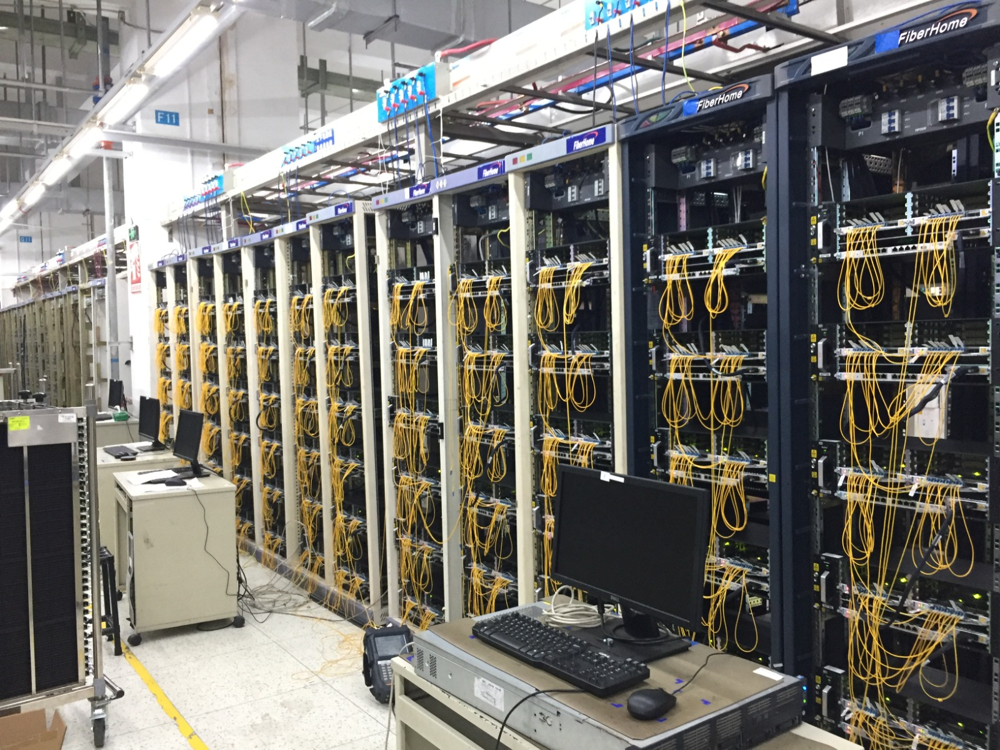
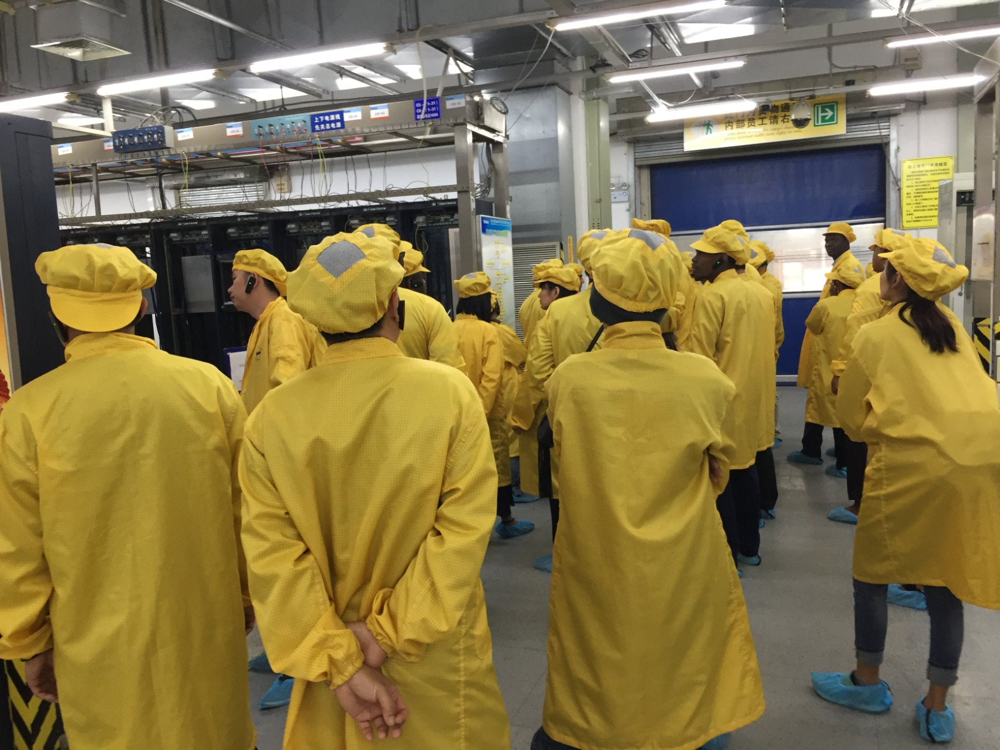
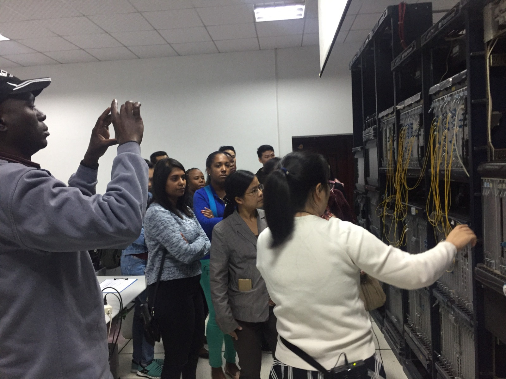
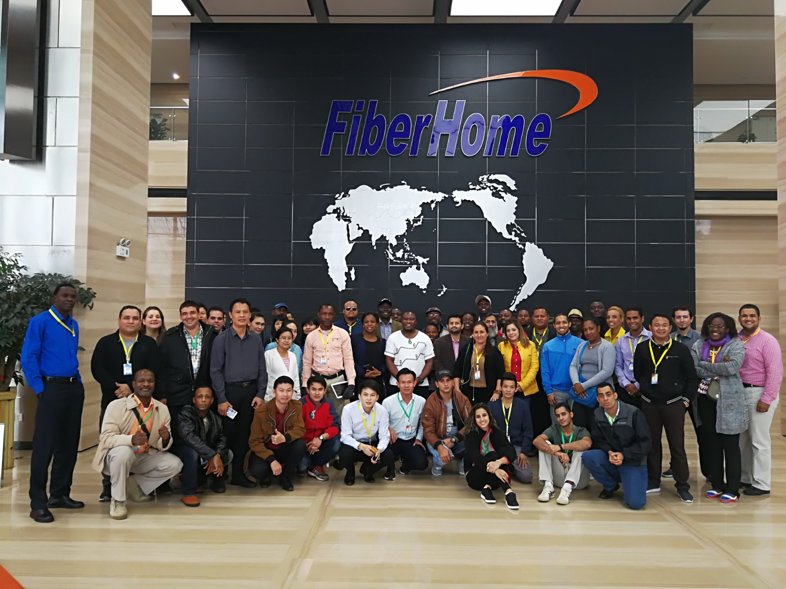
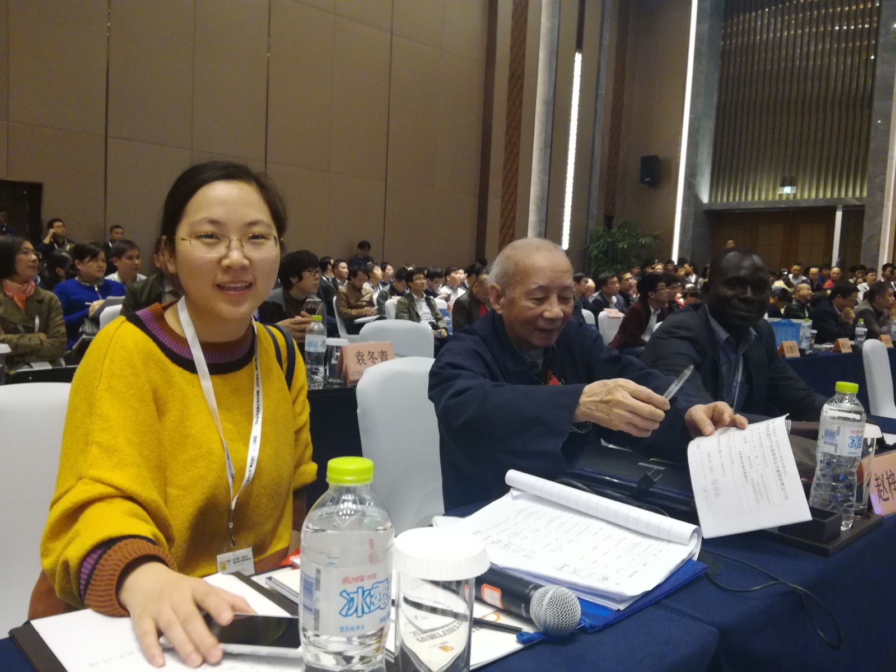
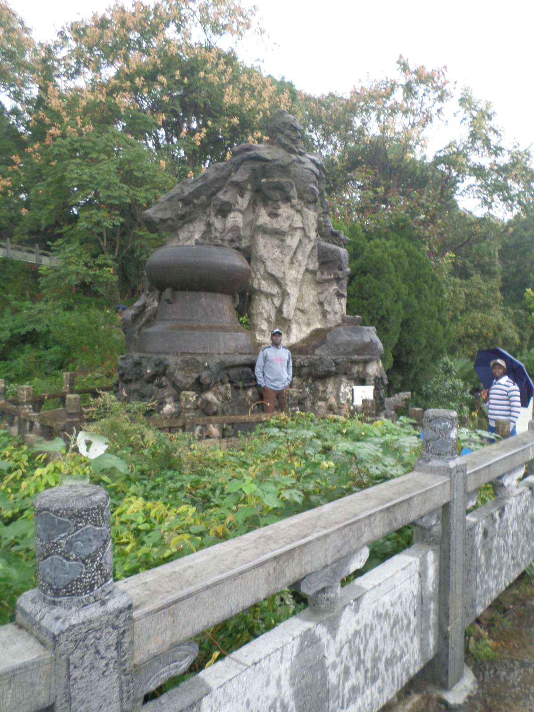

Photo Gallery & Hobbies
This section highlights some of my professional achievements as well as personal hobbies and passions. The gallery reflects my involvement in military communication projects, ICT innovations, leadership activities, and recreational interests.
|
 Networking Project Designing and implementing secure LAN/WAN solutions. |
 Cyber Defence Training Training teams in cyber security and incident response. |
 Leadership Workshop Guiding young officers in ICT leadership and strategy. |
|
 C4ISR Systems Enhancing command and control systems. |
Mentorship Empowering the next generation of ICT professionals. |
 Innovation Developing modern ICT-based defence solutions. |
|
Sports & Recreation Promoting fitness and teamwork through sports. |
 Adventure Exploring nature through hiking and outdoor activities. |
Personal Interests Engaging in hobbies that enhance creativity and resilience. |